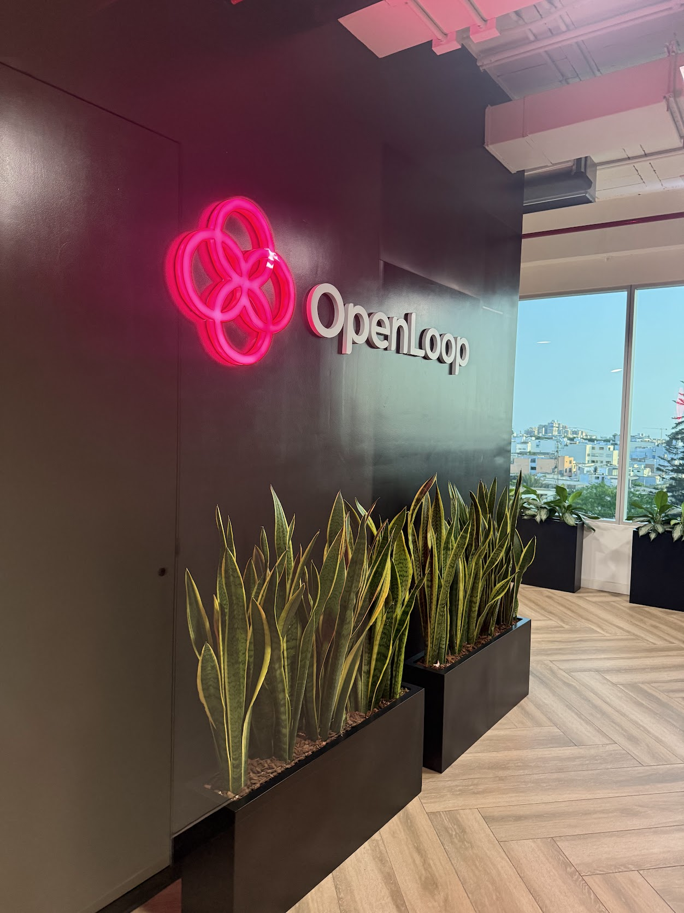

Lead Case Study
QA Leadership at OpenLoop
Built a quality engineering direction that connects product delivery, automation and release confidence across critical workflows.
- Defined cross-team quality strategy and release readiness criteria.
- Prioritized automation for product-critical journeys and engineering workflows.
- Created visibility for stakeholders through clearer quality signals and reporting.